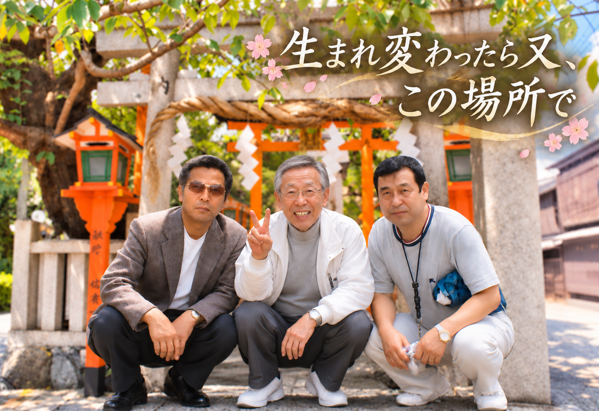
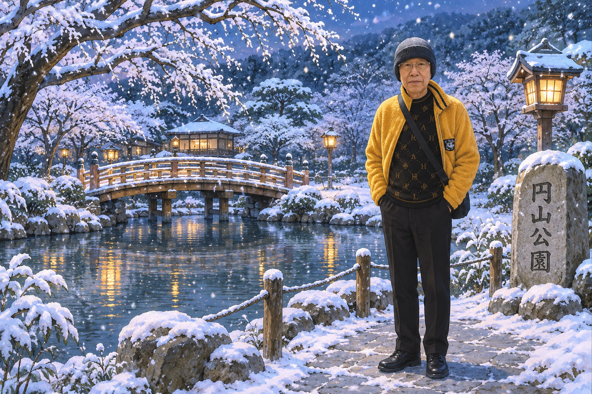

花見小路での出会い
彼と知り合ったのは、中学２年の時でした。叔父の家の２階にいると、下から呼び声が聞こえました。下にいる２人の姿を確かめ、会いに行ったのが、富山さんとの初めての出会いです。
叔父の家は、四条から２筋目の花見小路通に面していました。当時は辺りが暗かったこと、そして富山さんの姿が、とても印象に残っています。というのも、当時は珍しかった伊達メガネを掛けていたからです。
家を行き来する仲に
それから私たちは急速に仲良くなり、互いの家を行き来することも多くなりました。今も、富山さんのお母さんの話し方や笑顔が、印象に残っています。
お母さんの背中から
忘れられない扇風機
当時は暮らしが貧しく、ある日、私がお邪魔していた時のことです。富山さんのお母さんが、中古の鉄でできた扇風機を、２キロほどの道のりを持ち帰られました。その姿に、私は感嘆しました。
きゃしゃな体で、あれほど重いものを持ち帰ることは、想像を絶します。そのひたむきな立ち振る舞いを、今でも覚えています。
家庭の中で学んだもの
私は、会社経営を続けてこられた富山さんの成功の背景には、お母さんの立ち振る舞いがあったのではないかと、いつも思っています。お母さんの姿を見て育ったことが、会社経営の大きな原動力になったのではないでしょうか。
知らず知らずのうちに、家庭の中から経営の基本を学んでいたのかもしれません。家庭、そしてお母さんの役割は、とても貴重で重要なものだと感じています。
なぜそう思うのか。それは、富山さんが中学の頃によく喧嘩をしていたことも知っているからです。私は、その頃の姿と後の商売の成功を思い合わせ、家庭の影響に思いを巡らせます。
仕事を築き、
今も歩み続ける
富山さんは40代半ばからメンテナンス会社を立ち上げ、30年以上にわたり経営を続けてこられました。その歩みを、私はいつも立派だと思っています。

困難を越える強さ
人生には、いろいろな災難が訪れます。富山さんがいつも気強くそれを乗り越え、生きておられる姿に、私も見習わなければと勇気をもらっています。
80歳を間近にした現在も会社に関わり、努力を続けておられます。これからも健康を保ちながら、ご自分の人生を歩まれることを願っています。
いつも勇気をくれる友へ。
これからも、健やかな日々を。